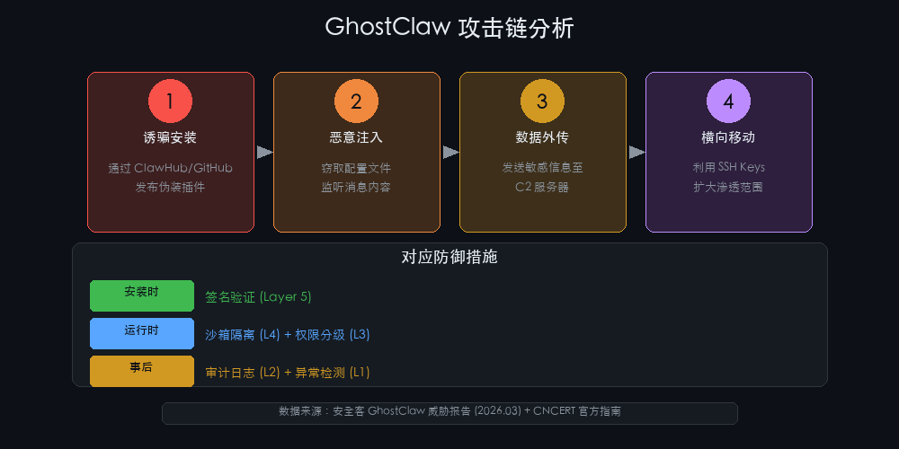
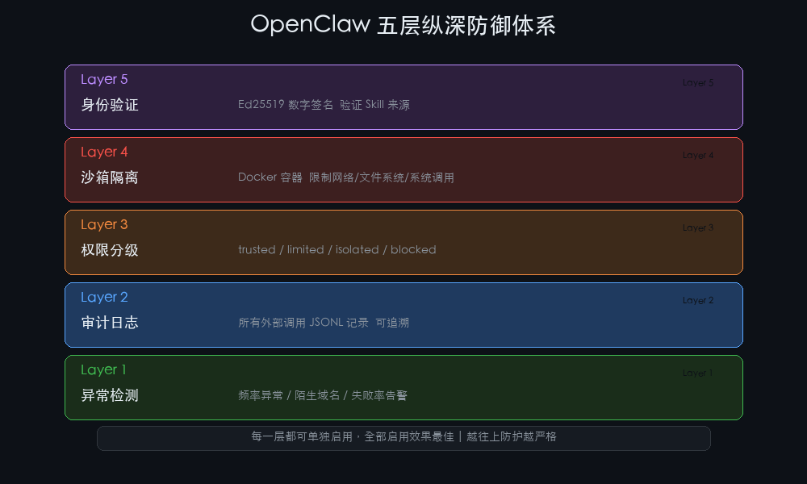
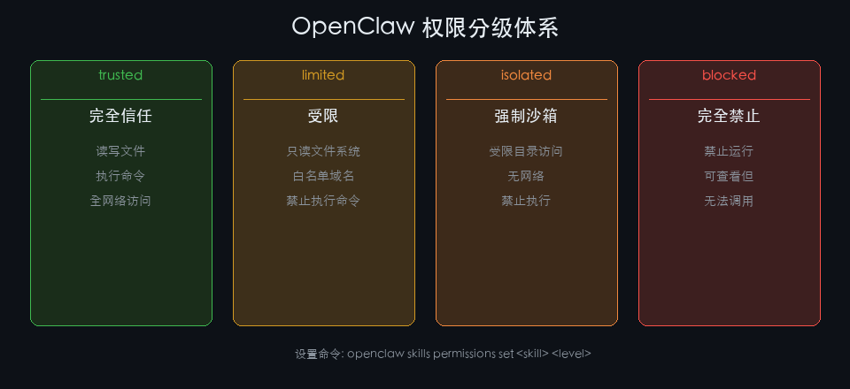

OpenClaw 安全加固完全指南（2026）：防御 GhostClaw 与权限控制
今年 3 月，GhostClaw 出现了——一个伪装成 OpenClaw 增强插件的恶意软件，通过 GitHub 传播，专门窃取开发者设备上的配置文件和密钥。

同月，CNCERT（中国国家计算机网络应急技术处理协调中心）联合中国网络空间安全协会发布了官方安全使用指南。再叠加上 OpenClaw 2026.3.x 版本开始引入零信任默认拒绝策略——这一切都在说同一件事：开源 AI 助手的安全性，不能靠"相信它不会出问题"来维持。
如果你在 VPS 或生产力环境里跑 OpenClaw，默认情况下它几乎什么都允许：读写文件、执行命令、访问网络。装一个"看起来有用"的 Skill，它可能正在把你的 .env 传出去。
本文从实际出发，介绍一套五层防御体系，其中有些是 OpenClaw 内置功能，有些需要安装配套 Skill。我会标注清楚哪些是真的能跑的命令，哪些是需要额外安装的。

先做最容易的一步：打开异常检测
不管你现在用的是哪个版本，异常检测都是投入最小、效果最快的一层。
OpenClaw 内置了基础的操作日志能力，加上 2026.3.2 之后引入的权限分级，默认已经比早期版本安全很多。但主动监控——特别是"这个 Skill 为什么在访问陌生的域名"——需要你自己配。
核心思路就四条规则：
| 规则 | 触发条件 | 意味着什么 |
|---|---|---|
| maxRequestsPerMinute > 50 | 单个 Skill 1 分钟内请求超过 50 次 | 爬虫行为，或正在对某接口做暴力请求 |
| maxDownloadSizeMB > 10 | 单次下载超过 10MB | 大量数据外传 |
| unknownDomainThreshold > 3 | 一天内访问陌生域名超过 3 个 | 可能的 C2 通信 |
| maxFailureRate > 0.8 | 连续 10 次操作 80% 以上失败 | 在试探未授权接口 |
在 ~/.openclaw/openclaw.json 里加入：
{
"security": {
"anomaly": {
"enabled": true,
"rules": {
"maxRequestsPerMinute": 50,
"maxDownloadSizeMB": 10,
"unknownDomainThreshold": 3
},
"actions": {
"disableSkillOnAlert": true,
"notify": {
"enabled": true,
"webhook": "你的 Webhook 地址"
}
}
}
}
}告警会写入 ~/.openclaw/security/alerts/YYYY-MM-DD.json，用 jq 快速查看：
jq -r '.skill + " | " + .rule + " | " + .action' \
~/.openclaw/security/alerts/$(date +%Y-%m-%d).json收到可疑告警之后，紧急响应顺序是：停掉 Skill → 查审计日志 → 删目录 → 检查网络连接：
# 停掉可疑 Skill
openclaw skills permissions set <skill-name> blocked
# 查看它做了什么
jq 'select(.skill == "可疑skill名")' ~/.openclaw/security/audit/$(date +%Y-%m-%d).jsonl
# 检查网络连接
ss -tp | grep ESTABLayer 2：审计日志——出了问题才知道查什么
异常检测告诉你"有情况"，审计日志告诉你"具体情况"。
OpenClaw 的审计日志是 JSONL 格式，每行一条操作记录，包含时间戳、Skill 名称、操作类型、目标地址、状态码和耗时。前提是你已经开启了这一层。
日志结构大致这样：
{
"timestamp": "2026-03-18T07:30:15.123Z",
"skill": "trend-scout",
"action": "web_fetch",
"target": "https://v2ex.com/api/topics/hot.json",
"status": 200,
"duration_ms": 456,
"session_id": "sess_abc123"
}几个实测有效的查询：
# 查看最近一小时的 exec 操作
zcat ~/.openclaw/security/audit/$(date +%Y-%m-%d).jsonl.gz 2>/dev/null | \
jq 'select(.action == "exec")' | jq '{time: .timestamp, skill: .skill, target: .target}'
# 找出最活跃的 5 个 Skill
zcat ~/.openclaw/security/audit/*.jsonl.gz | \
jq -r '.skill' | sort | uniq -c | sort -nr | head -5
# 实时监控（类似 tail -f）
tail -F ~/.openclaw/security/audit/$(date +%Y-%m-%d).jsonl | \
jq '{time: .timestamp, skill: .skill, action: .action, status: .status}'日志保留建议设置 90 天，超过自动压缩归档：
0 2 * * * find ~/.openclaw/security/audit -mtime +90 -exec gzip {} \;Layer 3：权限分级——这个是 OpenClaw 内置的
这一层是真的内置，从 2026.3.2 开始默认收紧，现在已经可以直接用。

OpenClaw 提供了四个权限级别，按信任度递减：
| 级别 | 文件系统 | 网络 | 执行命令 | 适用场景 |
|---|---|---|---|---|
| trusted | 读写 | 全访问 | ✅ | 你自己写的 Skill |
| limited | 只读 | 白名单域名 | ❌ | 经过审查的第三方 |
| isolated | 受限 | 无 | ❌ | 下载的未知 Skill |
| blocked | — | — | — | 确认恶意的 |
查看当前权限配置：
openclaw skills permissions list给一个 Skill 设置限制：
openclaw skills permissions set some-skill limited
openclaw skills permissions set ghostclaw-mimic blockedSkill 作者也可以在 SKILL.md 的 frontmatter 里声明所需权限：
---
name: my-skill
permission: limited
whitelistDomains: ["api.example.com"]
requiresSandbox: true
---用户安装时，如果权限不满足会收到提示，需要手动确认提升权限——这一步是故意的，让用户不要无脑点同意。
Layer 4：沙箱隔离——需要 Skill 支持
权限是软限制，沙箱是硬隔离。
这一层目前需要安装 security-hardening Skill 或类似的安全套件来实现 Docker 容器级别的隔离。它的效果是这样的：每个 exec 操作在独立容器里跑，文件系统只读挂载 workspace，网络默认 deny-all，系统调用受限，资源硬限制（CPU 1核 / 内存 256MB / 单次超时 30 秒）。
关于性能：容器首次启动有 ~100ms 冷启动代价，但容器会复用。实测高频 Skill 延迟增加 < 20ms，体感不明显。
Layer 5：数字签名——防伪装的最后一道防线
这是最严格的一层，核心思路很简单：没有私钥就签不了名，没有签名就不安装。
签名流程（Skill 发布者）：
# 生成密钥对
openssl genpkey -algorithm Ed25519 -out private.pem
openssl pkey -in private.pem -pubout -out public.pem
# 对 Skill 目录签名
cd ~/.openclaw/workspace/skills/my-cool-skill
tar cf - . | openssl dgst -sha256 -sign ../../private.pem > SIGNATURE.sig验证签名：
cd ~/.openclaw/workspace/skills/some-skill
tar cf - . | openssl dgst -sha256 \
-verify ~/.openclaw/security/trusted-keys/author.pub.pem \
-signature SIGNATURE.sig
# 输出 "Verified OK" 或 "Verification Failure"这个功能同样需要安全加固 Skill 支持，属于最高安全级别，普通用户如果只装 ClawHub 官方审核过的 Skill，可以先跳过。
一个普通用户的实操清单
不是所有人都需要配完整五层。以下是一个最低可行安全配置，大约 15 分钟能搞定：
第一步：确认当前状态
# 检查 OpenClaw 版本（确保 >= 2026.3.2）
openclaw --version
# 检查当前权限默认值
openclaw skills permissions list第二步：收紧默认权限
# 把默认值改为 limited（未明确授权的 Skill 不能随便读写文件）
openclaw config set security.permissions.default limited第三步：开启操作日志
# 确保审计目录存在
mkdir -p ~/.openclaw/security/audit
chmod 700 ~/.openclaw/security/audit第四步：检查网络暴露
# 确认 OpenClaw 没有监听公网（18789 端口）
netstat -tuln | grep -E '18789|19890'第五步：定期检查
每周花 5 分钟跑一遍：
# 查看最近有哪些 Skill 在活跃
jq -r '.skill' ~/.openclaw/security/audit/$(date +%Y-%m-%d).jsonl | \
sort | uniq -c | sort -nr
# 确认没有陌生域名访问
jq -r '.target' ~/.openclaw/security/audit/$(date +%Y-%m-%d).jsonl | \
grep -oP '(?<=https?://)[^/]+' | sort -u说几个我自己的感受
写这篇文章的过程中，我最大的感受是：安全这事，越往后越要靠体系，不是靠一两个命令。
Layer 1 和 Layer 2（异常检测 + 审计日志）是任何人都值得开的，基本没成本，出问题有据可查。Layer 3（权限分级）是内置的，只要你知道它的存在就行，很多人跑了半年都不知道能关 Skill 的权限。
Layer 4 和 Layer 5（沙箱 + 签名）则适合有一定运维经验、或者确实需要跑未知来源 Skill 的用户。如果你的 Skill 都从 ClawHub 官方渠道安装，先把前三层配好就足够防住 80% 的风险了。
另外——别把 OpenClaw 当成存隐私数据的地方。它是一个执行中枢，不是保险箱。就算加满了五层，它本质上还是一个有文件读写和网络访问权限的 AI 程序——这是它的价值所在，也是它的风险所在。
你的 OpenClaw 目前配了几层？评论区说说你的安全配置。
⚠️ 本文涉及的部分高级安全特性（沙箱隔离、数字签名）需要安装配套 Skill 实现，非 OpenClaw 内置功能。官方内置的安全能力以 2026.3.x 及以上版本的 release notes 为准。